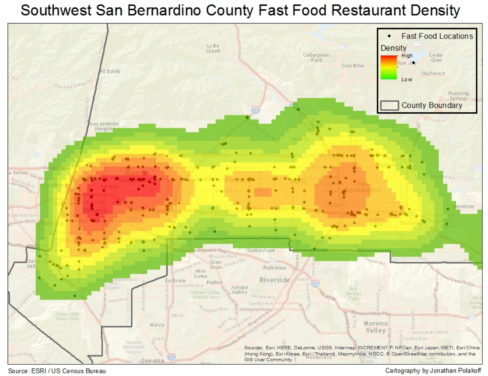

Full-stack application that draws data from the Metropolitan Museum of Art's open-sourced collection. AngularJS front end, Rails back end.
Github (front end)
Github (back end)
Web development:
GIS data visualization:

"Where Fast Food Proliferates" was my capstone project in UCLA Extension's Intermediate GIS course. The project takes a look a critical look at areas in San Bernardino County, CA where access to fast food is plentiful and access to fresh food is scarce. The project draws upon several sources of geospatial data.